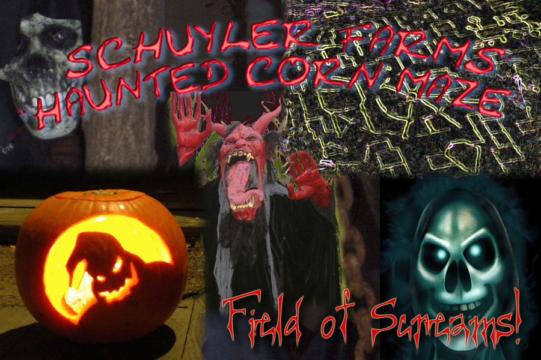
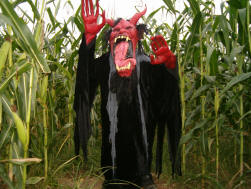
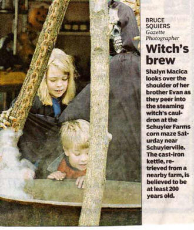
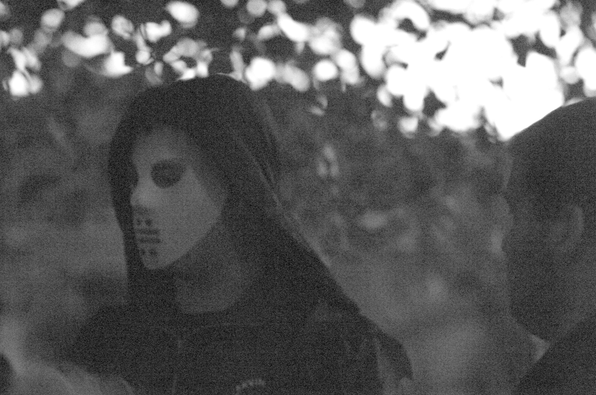
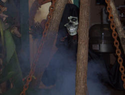
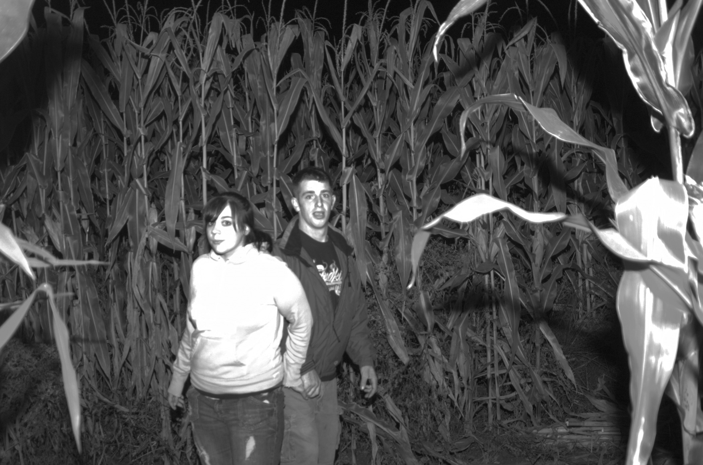

Slideshow of Past Mazes
- 
- 
- 
- 
- 
- 

Soop spook
Have you ever wondered what comes out at night in the corn maze? Stop by and enter our Field of Screams Friday and Saturday nights in October to find out! You will never experience anything quite like the Field of Screams! Every twist and turn in the maze will hold a new surprise for you. As you navigate your way thru the corn maze, with just a flashlight to light your way, anticipation and fear will build inside of you. There are demons and ghouls around every bend...masked men with chainsaws following behind you...haunted buildings within the maze to pass thru...and many more surprises that will make you laugh and cry.
The Haunted Maze is a unique experience that will have you coming back year after year. (See haunted dates above)
If you think you are brave, really brave, then we dare you to enter "The Field of Screams"!!!
"We are the stalk of the town"